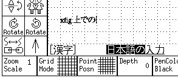
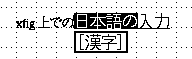
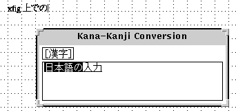

Internationalization (Using Japanese, Korean, etc.)
xfig 3.2.X and
fig2dev 3.2.X include code for internationalization,
and it is possible to put characters of Japanese
and some another languages in texts.
At now, it is known to worked under Japanese and Korean.
Additional informations about this may available at
http://member.nifty.ne.jp/tsato/xfig/.
Send any questions or comments about this internationalization facility to
[email protected] (T.Sato).
Although they are not included in the official release of xfig at this time,
it may possible to use some other languages such as Greek (ISO-8859-4),
Hebrew (ISO-8859-8), Thai (ISO-8859-11), Cyrillic (ru_RU.KOI8), etc.
See "Xfig and non-ASCII Characters"
at
http://member.nifty.ne.jp/tsato/xfig/ about this topic.
To use this internationalization facility, you must have following environment:
- Library and X Server of X11R5 or X11R6.
(They must be appropriately internationalized and
they must be possible to connect to the input method.
Use of X11R6 is recommended.)
- Appropriate conversion server
(Canna or Wnn, for example),
and an input method (kinput2 or htt, for example).
These facilities may be implemented as a single program.
- Fonts for the language (jiskan16 for Japanese, for example)
- Get xfig.3.2.3d.full.tar.gz
and gunzip and untar it.
- Uncomment ``#define I18N''
in xfig.3.2.3d/Imakefile (remove the XCOMM comment).
- If your C library supports the required locale,
remove -DSETLOCALE from the definition of I18N_DEFS
in the Imakefile.
If your C library doesn't support the required locale,
make sure that -DSETLOCALE is specified.
- Compile and install
xfig in the usual way.
- Get transfig.3.2.3d.tar.gz
and gunzip and untar it.
- Uncomment ``#define I18N''
in transfig.3.2.3d/fig2dev/Imakefile (remove the XCOMM comment).
- If you want to install files like japanese.ps
to a directory other than /usr/local/lib/fig2dev,
modify the definition of FIG2DEV_LIBDIR and I18N_DEV_DEFS
in the Imakefile.
- Compile and install
TransFig (fig2dev) in the usual way.
- Set the locale name for the language to be used
(such as ja_JP.eucJP or ko_KR.eucKR, for example)
to the environment variable LANG.
- If it is necessary, set the environment variable XMODIFIERS
to specify the input method to be used.
- Make sure that the appropriate conversion server
(Canna or Wnn, for example)
and an input method (kinput2 or htt, for example)
is available.
- Type ``xfig -international''.
Without the -international option,
xfig will work as normal (no internationalization).
If you put ``Fig.international: true''
into your resource file,
-international option may omitted.
Using this internationalization facility,
you may enter text in Japanese or some another languages
(henceforce, call ``international text'')
with the
TEXT facility.
When entering international text,
``
Times-Roman'' or ``
Times-Bold''
(may be displayed as ``
Times-Roman + Mincho''
and ``
Times-Bold + Gothic'' in Japanese environment)
must be selected as
TEXT FONT.
Input of international text will be started
by typing a key to switch the input mode
when it is ready to input text from the keyboard
in TEXT mode.
It depend on the environment as to which key will switch the input mode,
but keys such as Shift-SPACE, Control-SPACE,
Control-O, or Control-\ may be used in many cases.
Operations for conversion also depend on the environment,
but will be the same as other applications which use the environment.
The input style may be selected from
Off the Spot, Over the Spot, and Root.
The input style to be used
may be selected with the inputStyle resource
or the -inputStyle option.
For example, xfig -international -inputStyle OverTheSpot
will select Over the Spot as the input style.
- Off the Spot:
- The text under conversion will be displayed at the bottom of the canvas.

- Over the Spot:
- The text under conversion will be displayed at the position
where it will end up.
But the display may be somewhat strange
because it will be displayed with a different font.
Also, it may lead to somewhat unusual behavior,
or the display on the canvas may get confused.

- Root:
- The text under conversion will displayed in a separate window.

By default, fonts to be used on the display (hardcoded in the program)
is very loosely specified so that those fonts can found on any systems:
Fig.normalFontSet: -*-times-medium-r-normal--16-*-*-*-*-*-*-*,\
-*-*-medium-r-normal--16-*-*-*-*-*-*-*,\
-*-*-*-r-*--16-*-*-*-*-*-*-*
Fig.boldFontSet: -*-times-bold-r-normal--16-*-*-*-*-*-*-*,\
-*-*-bold-r-normal--16-*-*-*-*-*-*-*,\
-*-*-*-r-*--16-*-*-*-*-*-*-*
With this default specification, non-desirable fonts may loaded
(bad appearance of texts or long delay when starting of xfig
may caused as the result, for example) on some systems.
In such case, you may need to specify those fonts more definitive
in the resource file (app-defaults/Fig)
and force the system to load the specified font:
Fig*FontSet: -misc-fixed-medium-r-normal--14-*-*-*-*-*-*-*
Fig.normalFontSet: -*-times-medium-r-normal--14-*-*-*-*-*-*-*,\
-misc-fixed-medium-r-normal--14-*-*-*-*-*-*-*
Fig.boldFontSet: -*-times-bold-r-normal--14-*-*-*-*-*-*-*,\
-misc-fixed-medium-r-normal--14-*-*-*-*-*-*-*
If scalable fonts are available
(when X server which support scalable fonts
like X-TrueType Server
is in use, for example)
appearance of text may improved by specifying large fonts, as:
Fig*FontSet: -*-times-medium-r-normal--16-*-*-*-*-*-*-*,\
-foobar-mincho-medium-r-normal--16-*-*-*-*-*-*-*
Fig.normalFontSet: -*-times-medium-r-normal--64-*-*-*-*-*-*-*,\
-foobar-mincho-medium-r-normal--64-*-*-*-*-*-*-*
Fig.boldFontSet: -*-times-bold-r-normal--64-*-*-*-*-*-*-*,\
-foobar-gothic-medium-r-normal--64-*-*-*-*-*-*-*
Fonts used when generating PostScript output are specified
in the files like
japanese.ps in
fig2dev package,
and it is possible to change them by modifying those files.
Japanese
By default,
Ryumin-Light and
GothicBBB-Medium
will used if they are available,
and
HeiseiMin-W3 and
HeiseiKakuGo-W5 otherwise.
Locale name can one of japanese, ja, ja_JP,
ja_JP.ujis, ja_JP.eucJP and ja_JP.EUC.
Korean
By default,
Munhwa-Regular and
MunhwaGothic-Bold
will used if they are available,
and
HLaTeX-Myoungjo-Regular and
HLaTeX-Gothic-Regular otherwise.
Locale name can one of korean, ko, ko_KR,
ko_KR.eucKR and ko_KR.EUC.
Another Languages
Because configuration file for languages other than Japanese and Korean
is not prepared,
you must make the file for the language and available fonts.
The file must installed into the directory
specified when fig2dev is installed.
The filename must locale name followed by ``.ps''.
For example, if locale name is zh_CN.eucCN,
the filename must zh_CN.eucCN.ps.
X Window System has mechanism to load locale-specific resource file
to support internationalization (localization) of applications.
With this mechanism, it is possible to make suitable settings for the language
without specifying options when executing the application.
To make
xfig works properly for multiple languages,
it may be necessary to make suitable settings using this mechanism.
In the default configuration of X11R6,
if there is a resource file like
/usr/X11R6/lib/X11/locale/app-defaults/Fig
(here, locale is locale name or its ``language part''),
it will be loaded instead of
/usr/X11R6/lib/X11/app-defaults/Fig.
Therefore, if you wrote setting for Japanese environment in
/usr/X11R6/lib/X11/ja/app-defaults/Fig,
the setting for Japanese environment will be used when
environment variable LANG is set to ja_JP.eucJP or so,
and default setting in /usr/X11R6/lib/X11/app-defaults/Fig
will be used otherwise.
- When entering international text, you must select
``Times-Roman'' or ``Times-Bold''
(may be displayed as ``Times-Roman + Mincho''
and ``Times-Bold + Gothic'' in Japanese environment)
as the TEXT FONT.
If any other font is selected,
Latin-1 characters
will be available as in normal xfig.
- It is not possible to edit international text
in the Edit Panel.
But it is possible to edit text on the canvas
in TEXT mode.
- When specifying international resource,
you should specify as ``Fig.international: true''
but not ``Fig*international: true''.
- Use EUC for encoding of multi-byte text.
You may need to set locale (environment variable LANG)
appropriately for your system.
On some systems, japanese may select non-EUC encoding.
- In Japanese environments,
text may include only ASCII and JIS-X-0208 characters.
If the environment supports it,
it may be possible to enter characters
of JIS-X-0201 kana characters
or JIS-X-0212 (supplement kanji),
but fig2dev will not accept those characters.
- Regrettably, making xfig 3.2.X's Japanese entering feature
available may difficult on many X11R5 systems.
It is known to work on Japanese Solaris 2's OpenWindows and Solaris CDE,
but unknown about another X11R5-based systems.
At this time,
xfig's international facility
has been successfully worked on the following environments.
Japanese
| Operating System | X | Input Method
|
|---|
| SunOS 4.1 | X11R6 | kinput2
|
| Solaris 2.5 | X11R6 | kinput2
|
| Solaris 2.5-2.6 | OpenWindows, CDE | htt, ATOK
|
| HP-UX 10.20 | X11R6 | kinput2
|
| IRIX 6.3* | X11R6 | kinput2
|
| FreeBSD 2.2 | XFree86 | kinput2
|
| Slackware Linux 3.1 | XFree86 | kinput2
|
| RedHat Linux 4.2, 5.2 | XFree86 | kinput2
|
| Debian GNU/Linux 2.x | XFree86 | kinput2, skkinput
|
| Linux MLD 5 | XFree86 | kinput2
|
* On IRIX 6.3, you may need to compile xfig
with IRIX's genuine cc (not with gcc),
specifying compile option -N32 -mips3.
Also, you may need to get source of JPEG library and compile it yourself,
to avoid using JPEG library distributed with IRIX.
Korean
| Operating System | X | Input Method
|
|---|
| RedHat Linux 5.2, 6.0 | XFree86 | hanIM, ami
|
- SEE ALSO:
- Hangul and Internet in Korea FAQ
Hangul and Printing
[
Contents |
Introduction |
Credits ]